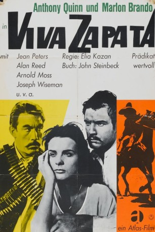

#9918 Viva Zapata
Alternativ: Viva Zapata!
Auszeichnungen: 1 Oscars gewonnen für 4 Oscars nominiert 1 BAFTA-Awards gewonnen
 
 IMDB-Wertung: 7.5 / 10
IMDB-Wertung: 7.5 / 10  Metascore: 0
Metascore: 0 
Emiliano Zapata ist ein mittelloser mexikanischer Indiander. 1909 klagt er gegen die Beschlagnahmung von Ackerland. Als der Präsident sein Anliegen ablehnt, beschließt Zapata, gegen das Regime zu kämpfen und schließt sich den Rebellen an. Er wird zum Rebellenführer und schließlich zum Präsidenten gewählt. Doch für die Macht muss er einen hohen Preis bezahlen...
Jahr: 1952
Dauer: 113 Minuten
FSK: 12
Land: USA Studio: Twentieth Century-Fox Film CorporationTonspuren:
Untertitel: Englisch,
Auflösung: 720p (992x720) Größe: 6871 MB
Genre: Drama, Geschichte, Biographie
Regisseur:  Elia Kazan
Elia Kazan
Drehbuch: John Steinbeck, Edgecumb Pinchon
Soundtrack: Alex North
Darsteller:
 Marlon Brando als Zapata
Marlon Brando als Zapata Jean Peters als Josefa
Jean Peters als Josefa Anthony Quinn als Eufemio
Anthony Quinn als Eufemio- Joseph Wiseman als Fernando
- Arnold Moss als Don Nacio
- Alan Reed als Pancho Villa
- Margo als Soldadera
 Frank Silvera als Huerta
Frank Silvera als Huerta Richard Garrick als Old General
Richard Garrick als Old General- Mildred Dunnock als Senora Espejo
- Rico Alaniz als Guard (uncredited)
- Ross Bagdasarian als Officer (uncredited)
- Abner Biberman als Captain (uncredited)
- Edward Colmans als Secretary (uncredited)
- Henry Corden als Senior Officer (uncredited)
 Frank DeKova als Col. Guajardo (uncredited)
Frank DeKova als Col. Guajardo (uncredited)- Fernanda Eliscu als Fuentes' Wife (uncredited)
- David Fresco als Guard (uncredited)
- Bernie Gozier als Zapatista (uncredited)
- Marc Krah als Officer (uncredited)
- Will Kuluva als Lazaro (uncredited)
 George J. Lewis als Rurale Officer (uncredited)
George J. Lewis als Rurale Officer (uncredited)- Peter Mamakos als Soldier (uncredited)
 Nestor Paiva als New General (uncredited)
Nestor Paiva als New General (uncredited) Kumar Pallana als Soldier (uncredited)
Kumar Pallana als Soldier (uncredited)- Pedro Regas als Innocente (uncredited)
 Ric Roman als Manager (uncredited)
Ric Roman als Manager (uncredited) Henry Silva als Hernandez - Peasant Who Challenges 'President' Zapata (uncredited)
Henry Silva als Hernandez - Peasant Who Challenges 'President' Zapata (uncredited)- Guy Thomajan als Eduardo (uncredited)
- Nick Thompson als Delegate (uncredited)
 Philip Van Zandt als Commanding Officer (uncredited)
Philip Van Zandt als Commanding Officer (uncredited)- Nina Varela als Aunt (uncredited)
- Harold Gordon als Madero
- Lou Gilbert als Pablo
- Florenz Ames als Senor Espejo
- Fay Roope als Diaz
- Daniel Armijo als Minor Role (uncredited)
- Salvador Baguez als Soldier (uncredited)
- John F. Bray als (uncredited)
- Enrique Cabrera als Minor Role (uncredited)
- Jack Carr als Huerta's Aide (uncredited)
- Miguel Contreras als Mexican (uncredited)
- Joe Dominguez als Manuel (uncredited)
 Larry Duran als (uncredited)
Larry Duran als (uncredited)- Robert Filmer als Captain of Rurales (uncredited)
- William Frescas als Minor Role (uncredited)
- Leonard George als Husband (uncredited)
- Joseph Granby als (uncredited)
- Joe Herrera als Rurale (uncredited)
- Ruben Holquin als Minor Role (uncredited)
Datei: X:\1950-1959\Viva Zapata (1952, FSK12, 992x720).mkv seit 08.11.2018
Festplatte: HD 1900-1970
 Es gibt insgesamt 141 Filme in der Gruppe '1950-1959'
Es gibt insgesamt 141 Filme in der Gruppe '1950-1959'